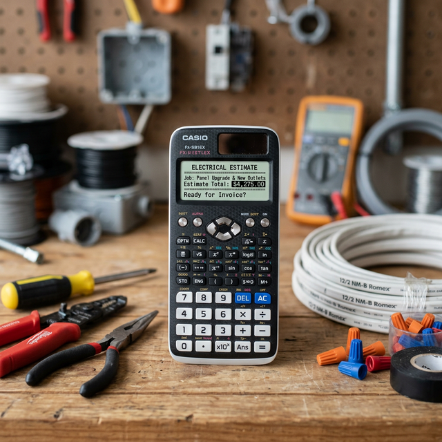

Цены на электромонтаж: из чего складывается стоимость?
Сколько стоит поменять проводку в 1-комнатной квартире в Кишиневе? Этот вопрос задает каждый, кто начинает ремонт. Давайте разберем ценообразование услуг электрика.
Что влияет на цену?
- Тип стен: Штробление бетона стоит дороже, чем работа с газоблоком или кирпичом.
- Объем работ: Частичная замена провода обойдется дешевле, чем разводка "под ключ".
- Количество точек: Чем больше розеток, выключателей и светильников, тем выше итоговый чек.
Средние цены на услуги электрика в Кишиневе
На сегодняшний день средние расценки у частных мастеров следующие:
- Монтаж электроточки (розетка/выключатель) – от 150 до 250 леев.
- Прокладка кабеля (за погонный метр) – от 20 до 40 леев.
- Штробление стен – от 50 леев / метр.
- Сборка распределительного щита – от 800 леев (зависит от количества автоматов).
Частный мастер или фирма?
Вызов фирмы обойдется вам на 30-40% дороже за счет издержек на менеджеров и рекламу. Частный электрик работает на себя, поэтому может предложить более выгодные условия без потери качества и с такой же гарантией.
Хотите узнать точную стоимость для вашей квартиры?
Использовать онлайн калькулятор